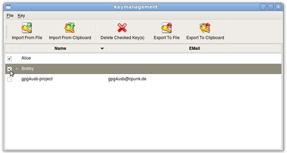
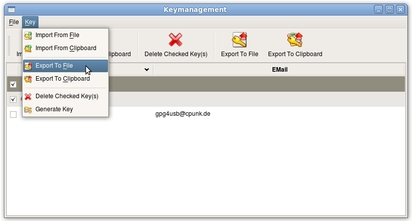

Cómo exportar llaves públicas
Hay cuatro pasos para exportar llaves públicas. Supongamos que Bobby quiere exportar la llave de Alice y la suya propia para darselas a Charly, de manera que él pueda cifrar mensajes y archivos para ellos.
PASO 1: Abrir el administrador de llaves
Primero, Bobby abre el administrador de llaves a través del botón de la barra de herramientas.

PASO 2: Escoger llaves
Segundo, escoge la llave de Alice y la suya propia.

PASO 3: Escoger exportar llave
Ahora navega por el menú 'Llave' -> 'Exportar a archivo' (otra opción es 'Llave' -> 'Exportar a portapapeles'). Si escoge exportar archivo a portapapeles, se termina ahora. De lo contrario, vamos al siguiente paso. Alternativamente, se puede escoger 'Exportar a archivo' desde la barra de herramientas.

PASO 4: Seleccionar el archivo
Ahora se escoge el archivo para guardar la llave en él.

NOTA: Para dar su llave pública a alguien, también puede usted añadirla al texto en la caja del editor de texto mediante el menú contextual del listado de llaves (clic derecho en la llave selecionada)..